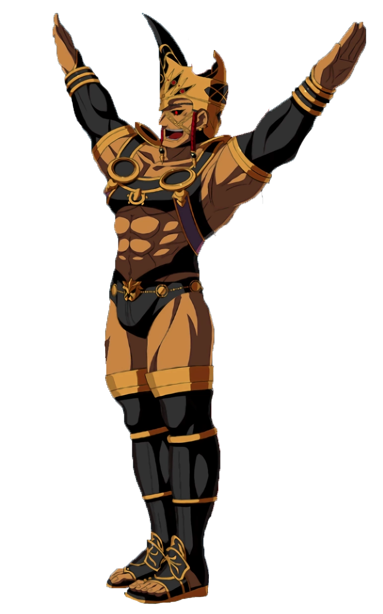

big dick energy
is this a pillar man?
It’s Romulus from Fate / Grand Order. Like, yes, that Romulus, son of Mars and founder of Rome.
…turning him into a joke character, despite his very real importance to a number of other characters in the setting (due to being the Grand Old Man of Roman heroes), is one of the many unforgivable things that the Fate franchise has done to history and mythology.
And yet I keep going back. Sigh. Goddammit.